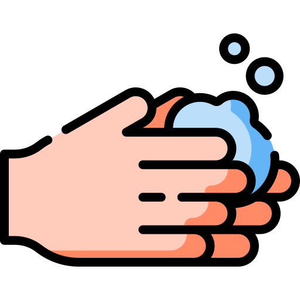

Lávese las manos frecuentemente.
Lávese las manos con frecuencia con un desinfectante de manos a base de alcohol o con agua y jabón.
¿Por qué? Lavarse las manos con un desinfectante a base de alcohol o con agua y jabón mata el virus si este está en sus manos.


Adopte medidas de higiene respiratoria. Al toser o estornudar, cúbrase la boca y la nariz con el codo flexionado o con un pañuelo; tire el pañuelo inmediatamente y lávese las manos con un desinfectante de manos a base de alcohol, o con agua y jabón. ¿Por qué? Al cubrir la boca y la nariz durante la tos o el estornudo se evita la propagación de gérmenes y virus. Si usted estornuda o tose cubriéndose con las manos puede contaminar los objetos o las personas a los que toque.

Evite tocarse los ojos, la nariz y la boca. ¿Por qué? Las manos tocan muchas superficies que pueden estar contaminadas con el virus. Si se toca los ojos, la nariz o la boca con las manos contaminadas, puedes transferir el virus de la superficie a si mismo.

Si tiene fiebre, tos y dificultad para respirar, solicite atención médica a tiempo. Indique a su prestador de atención de salud si ha viajado a una zona de China en la que se haya notificado la presencia del 2019-nCoV, o si ha tenido un contacto cercano con alguien que haya viajado desde China y tenga síntomas respiratorios.

Manténgase informado y siga las recomendaciones de los profesionales sanitarios. Manténgase informado sobre las últimas novedades en relación con la COVID-19. Siga los consejos de su dispensador de atención de salud, de las autoridades sanitarias pertinentes a nivel nacional y local o de su empleador sobre la forma de protegerse a sí mismo y a los demás ante la COVID-19. ¿Por qué? Las autoridades nacionales y locales dispondrán de la información más actualizada acerca de si la COVID-19 se está propagando en su zona. Son los interlocutores más indicados para dar consejos sobre las medidas que la población de su zona debe adoptar para protegerse.